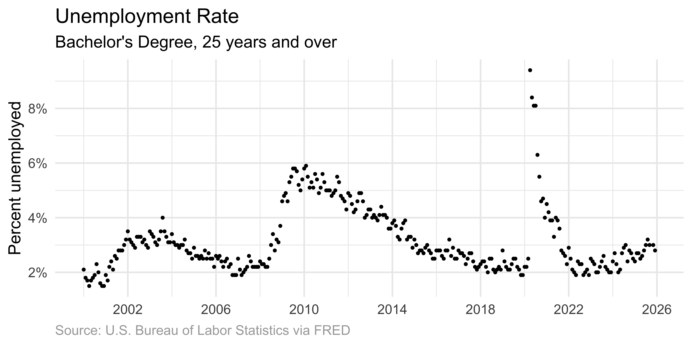
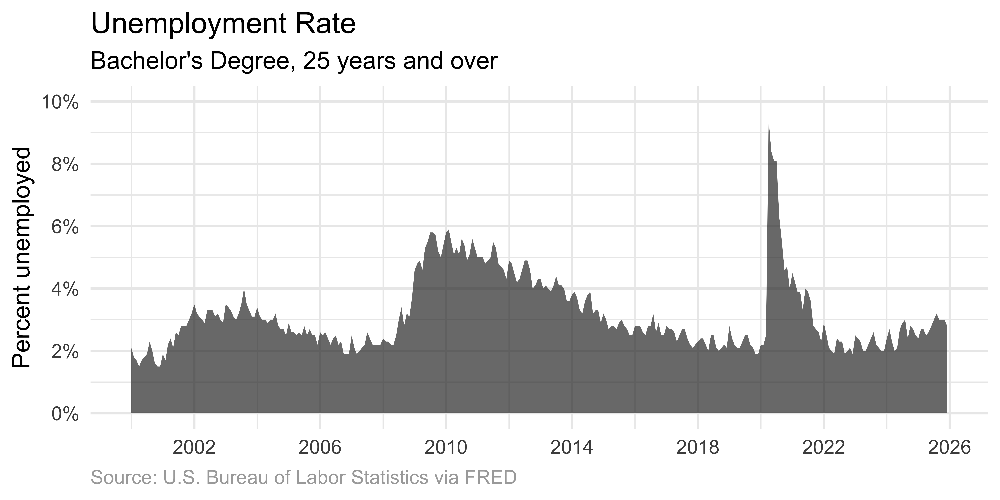
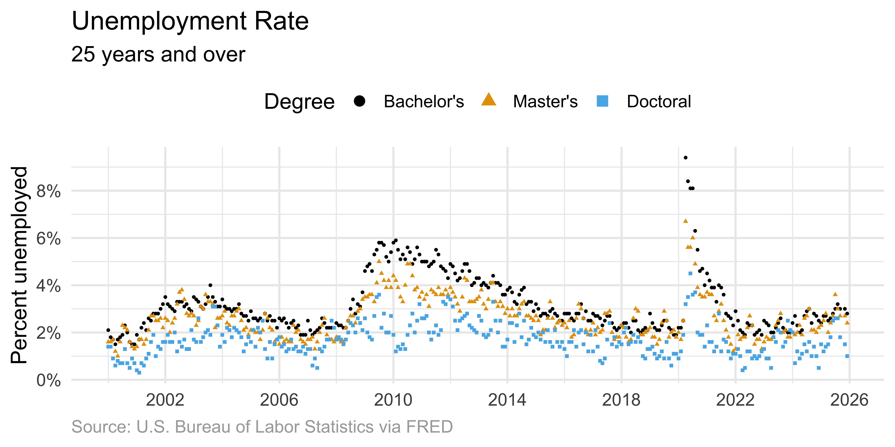
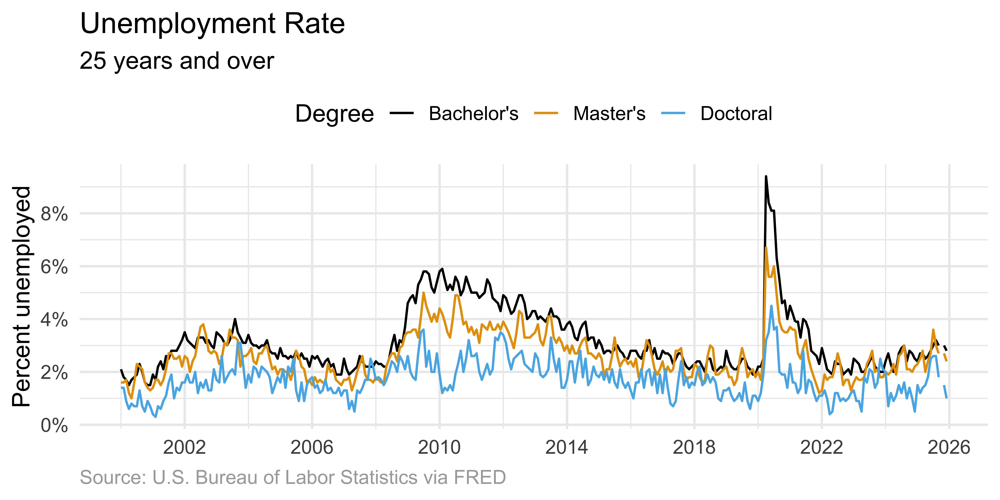
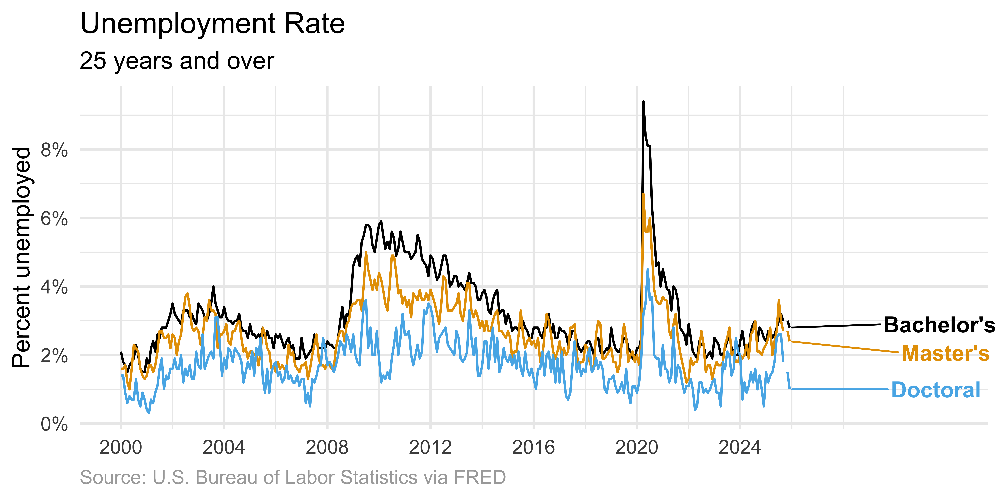

# load packages
library(tidyverse)
library(scales)
library(ggthemes)
library(colorspace)
library(ggrepel)
library(ggpp) # enhances support for data labels + annotations
# set theme for ggplot2
ggplot2::theme_set(ggplot2::theme_minimal(base_size = 14))
# set figure parameters for knitr
knitr::opts_chunk$set(
fig.width = 7, # 7" width
fig.asp = 0.618, # the golden ratio
fig.retina = 3, # dpi multiplier for displaying HTML output on retina
fig.align = "center", # center align figures
dpi = 300 # higher dpi, sharper image
)Visualizing time series data I
Lecture 5
Dr. Mine Çetinkaya-Rundel
Duke University
STA 313 - Spring 2026
Warm up
Dataviz of the day
What is this a visualization of? Type your guess in the Zoom poll.
Source: StackOverflow post by Machavity
Announcements
HW 1 due today at 5 pm – your last push to your repo by 5 pm will be considered your submission
Setup
Before we get started
What is the date today? Cast your vote on the Zoom poll.
- 2026-01-26
- 2026-26-01
- 01-26-2026
- 26-01-2026
Important
Use ISO 8601 format for dates whenever possible:
- Date and time values are ordered from the largest to smallest unit of time: year, month (or week), day, hour, minute, second, and fraction of second.
- Each date and time value has a fixed number of digits that must be padded with leading zeros.
From last time
Durham-Chapel Hill AQI
In ae-03, recreate the following visualization.
Show hint
aqi_levels <- tribble(
~aqi_min , ~aqi_max , ~color , ~level ,
0 , 50 , "#D8EEDA" , "Good" ,
51 , 100 , "#F1E7D4" , "Moderate" ,
101 , 150 , "#F8E4D8" , "Unhealthy for sensitive groups" ,
151 , 200 , "#FEE2E1" , "Unhealthy" ,
201 , 300 , "#F4E3F7" , "Very unhealthy" ,
301 , 400 , "#F9D0D4" , "Hazardous"
) |>
mutate(aqi_mid = ((aqi_min + aqi_max) / 2))Livecoding
Code developed during live coding session to be posted after class.
Time series
What makes time special?
Time imposes additional structure on the data.
- For each point we can define a predecessor and successor
- Enables ordered relationships between observations
- Suggests connecting data points visually
Data overview
From FRED, Federal Reserve Bank of St. Louis:
- Unemployment Rate - College Graduates:
- Features:
- Updated as of Jan 9, 2026
- In units of percent, not seasonally adjusted
- Between 2000-01-01 to 2025-12-01, monthly
Data: Unemployment Rate - Bachelor’s Degree, 25+ years (CGBD25O)
# A tibble: 312 × 3
date unemp_rate degree
<date> <dbl> <chr>
1 2000-01-01 2.1 Bachelor's
2 2000-02-01 1.8 Bachelor's
3 2000-03-01 1.7 Bachelor's
4 2000-04-01 1.5 Bachelor's
5 2000-05-01 1.7 Bachelor's
6 2000-06-01 1.8 Bachelor's
7 2000-07-01 1.9 Bachelor's
8 2000-08-01 2.3 Bachelor's
9 2000-09-01 2 Bachelor's
10 2000-10-01 1.6 Bachelor's
# ℹ 302 more rowsData: Unemployment Rate - Master’s Degree, 25+ years (CGMD25O)
# A tibble: 312 × 3
date unemp_rate degree
<date> <dbl> <chr>
1 2000-01-01 1.6 Master's
2 2000-02-01 1.6 Master's
3 2000-03-01 1.7 Master's
4 2000-04-01 1.2 Master's
5 2000-05-01 1 Master's
6 2000-06-01 1.6 Master's
7 2000-07-01 2.3 Master's
8 2000-08-01 2.2 Master's
9 2000-09-01 2.1 Master's
10 2000-10-01 1.6 Master's
# ℹ 302 more rowsData: Unemployment Rate - Doctoral Degree, 25+ years (CGDD25O)
# A tibble: 312 × 3
date unemp_rate degree
<date> <dbl> <chr>
1 2000-01-01 1.4 Doctoral
2 2000-02-01 1.4 Doctoral
3 2000-03-01 0.9 Doctoral
4 2000-04-01 0.6 Doctoral
5 2000-05-01 0.8 Doctoral
6 2000-06-01 0.7 Doctoral
7 2000-07-01 0.7 Doctoral
8 2000-08-01 1.3 Doctoral
9 2000-09-01 0.7 Doctoral
10 2000-10-01 0.5 Doctoral
# ℹ 302 more rowsData: All
# A tibble: 936 × 3
date unemp_rate degree
<date> <dbl> <fct>
1 2000-01-01 2.1 Bachelor's
2 2000-02-01 1.8 Bachelor's
3 2000-03-01 1.7 Bachelor's
4 2000-04-01 1.5 Bachelor's
5 2000-05-01 1.7 Bachelor's
6 2000-06-01 1.8 Bachelor's
7 2000-07-01 1.9 Bachelor's
8 2000-08-01 2.3 Bachelor's
9 2000-09-01 2 Bachelor's
10 2000-10-01 1.6 Bachelor's
# ℹ 926 more rowsVisualizing individual time series
Evolution of approaches
Starting with a dataset of monthly values over time, we can visualize with increasing levels of connection:
- Scatter plot: Individual dots for each observation
- Line + dots: Connect points with lines, show individual observations
- Line only: Emphasize overall trend, de-emphasize individual points
- Area graph: Fill beneath the curve for additional emphasis
Scatter plot
Individual dots mark each observation.

p_unemp_bachelor <- ggplot(
unemp_bachelor,
aes(x = date, y = unemp_rate)
) +
scale_x_date(date_breaks = "4 years", label = label_date(format = "%Y")) +
labs(
title = "Unemployment Rate",
subtitle = "Bachelor's Degree, 25 years and over",
x = NULL,
y = "Percent unemployed",
caption = "Source: U.S. Bureau of Labor Statistics via FRED"
) +
theme(
plot.caption = element_text(color = "darkgray", hjust = 0)
)
p_unemp_bachelor +
geom_point(size = 0.7) +
scale_y_continuous(
labels = label_percent(scale = 1),
breaks = seq(0, 10, 2)
)Line graph with points
Connecting points emphasizes the ordered relationship.
Line graph only
Omitting dots emphasizes the overall temporal trend.
Area graph
Shading beneath the curve highlights the magnitude of values.

Important
When using area graphs, the y-axis must start at zero. The filled area represents quantity – if the axis doesn’t start at zero, the visual representation misrepresents the data.
Lines don’t show data
Warning
Lines between points do not represent observed data – they are interpolations.
- Lines facilitate perception of trends
- Clarify in figure captions: “Lines meant as a guide to the eye”
- For dense time series, omitting individual points is appropriate
When to show points vs. lines
| Scenario | Recommendation |
|---|---|
| Few data points | Show both lines and points |
| Many data points | Lines only |
| Irregular intervals | Show points to reveal gaps |
| Emphasis on trend | Lines or area |
| Emphasis on individual values | Points (with or without lines) |
Multiple time series
Scatter plot
The challenge
When visualizing several concurrent time series:
- Scatter plots create visual interference, making it difficult to follow individual series
- Visual connection between related points help
Solution: Connected lines
Connected lines help readers follow each individual time course.

ggplot(
unemp,
aes(x = date, y = unemp_rate, color = degree, shape = degree)
) +
geom_line() +
scale_x_date(date_breaks = "4 years", label = label_date(format = "%Y")) +
scale_y_continuous(
labels = label_percent(scale = 1),
breaks = seq(0, 10, 2)
) +
scale_color_colorblind() +
labs(
title = "Unemployment Rate",
subtitle = "25 years and over",
x = NULL,
y = "Percent unemployed",
color = "Degree",
caption = "Source: U.S. Bureau of Labor Statistics via FRED"
) +
theme(
plot.caption = element_text(color = "darkgray", hjust = 0),
legend.position = "top"
)Direct labeling
Direct labeling reduces cognitive load compared to legends.

unemp |>
# add label for the last entry in each degree type
mutate(
label = case_when(
date == max(date) & degree == "Bachelor's" ~ "Bachelor's",
date == max(date) & degree == "Master's" ~ "Master's",
date == max(date) & degree == "Doctoral" ~ "Doctoral",
.default = NA
)
) |>
ggplot(aes(x = date, y = unemp_rate, color = degree, shape = degree)) +
geom_line() +
# add labels to plot, avoiding overlap
geom_text_repel(
aes(label = label),
hjust = -1,
na.rm = TRUE,
fontface = "bold",
size = 4.5
) +
# adjust x-axis limits (to make room for labels) + breaks (for data only)
scale_x_date(
label = label_date(format = "%Y"),
limits = c(NA_Date_, ymd("2032-01-01")),
breaks = seq(ymd("2000-01-01"), ymd("2026-01-01"), by = "4 years")
) +
scale_y_continuous(
labels = label_percent(scale = 1),
breaks = seq(0, 10, 2)
) +
scale_color_colorblind() +
labs(
title = "Unemployment Rate",
subtitle = "25 years and over",
x = NULL,
y = "Percent unemployed",
color = "Degree",
caption = "Source: U.S. Bureau of Labor Statistics via FRED"
) +
theme(
plot.caption = element_text(color = "darkgray", hjust = 0),
legend.position = "none" # turn off line and text geom legends
) +
coord_cartesian(clip = "off") # don't cut off labelsConnected scatter plots
What are connected scatter plots?
Also called phase portraits:
- Display two response variables against each other
- Connect values recorded at the same point in time
- Reveal relationships not visible in separate line graphs
Interpreting connected scatter plots
| Pattern | Interpretation |
|---|---|
| Diagonal movement (↗ or ↙) | Variables are correlated |
| Perpendicular movement | Variables are anti-correlated |
| Circular/elliptical patterns | Cyclic relationship |
| Clustered points | Stable periods |
Unemployment for Bachelor’s & Master’s
In ae-04, recreate the following visualization.

Livecoding
Code developed during live coding session to be posted after class.
Critical requirements
Connected scatter plots require:
- Clear directional indicators (arrows, color gradients)
- Temporal scale information
- Careful annotation
Without these elements, the visualization becomes confusing.
Recap
Choosing the right approach
The choice depends on:
- Data characteristics: Density, regularity, number of series
- Analytical goals: Trends vs. individual values
- Audience familiarity: Connected scatter plots require more reader sophistication
Takeaways
- Time imposes structure – use it with connected visualizations
- Progress from points → lines → areas based on data density and goals
- For multiple series, use direct labeling over legends
- Connected scatter plots reveal cyclical patterns but require careful design
- Always consider whether lines represent data or interpolation